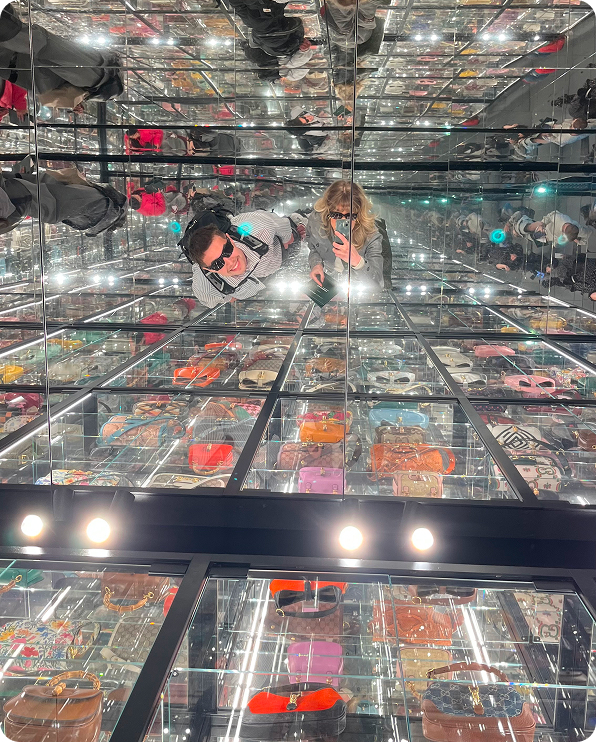
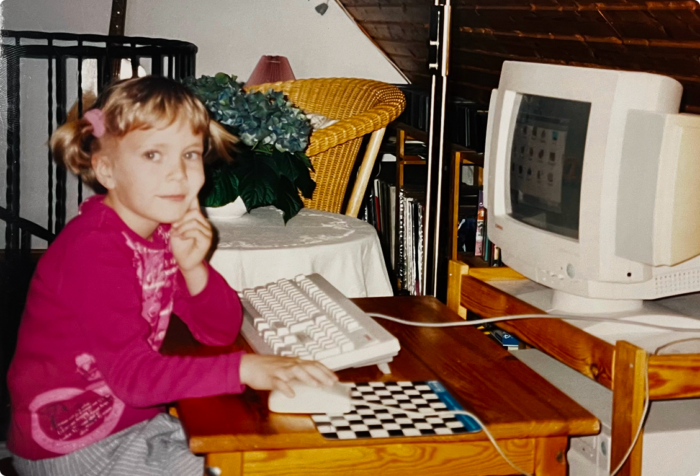
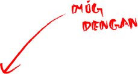

PORTFOLIO
Multimedie Design Studerende
Ditte Helene Andersen

EN DIGITAL REJSE
Som barn vidste jeg nok ikke lige, jeg ville gå på multimediedesignuddannelsen, da jeg sad på vores gamle Windows-computer.
For mig var det en leg der handlede om skøre 3D-pauseskærme, tegne i Paint, WordArt med farverige fonte og de små sjove animations features.
Det var leg og nysgerrighed. I dag kan jeg mærke en nostalgi fra den tid, som stadig hænger sammen med min interesse for webdesign.
At se den udvikling, der er sket siden, gør det, jeg lærer i dag, endnu sjovere.


SEMESTERPROJEKTER